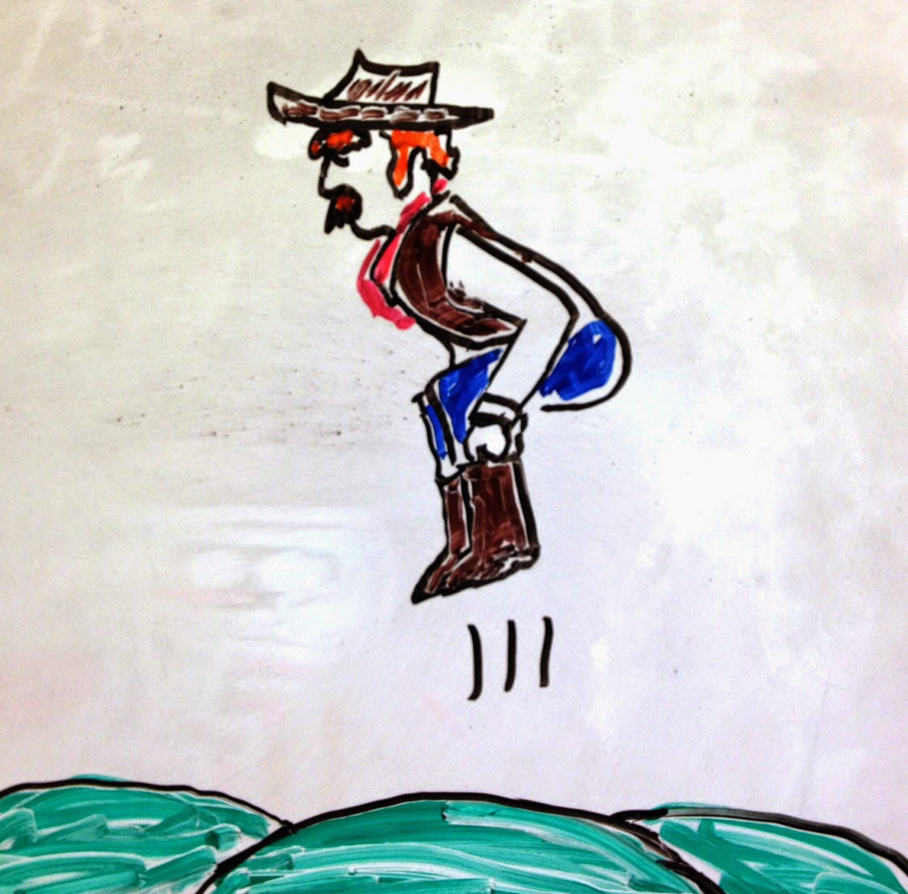
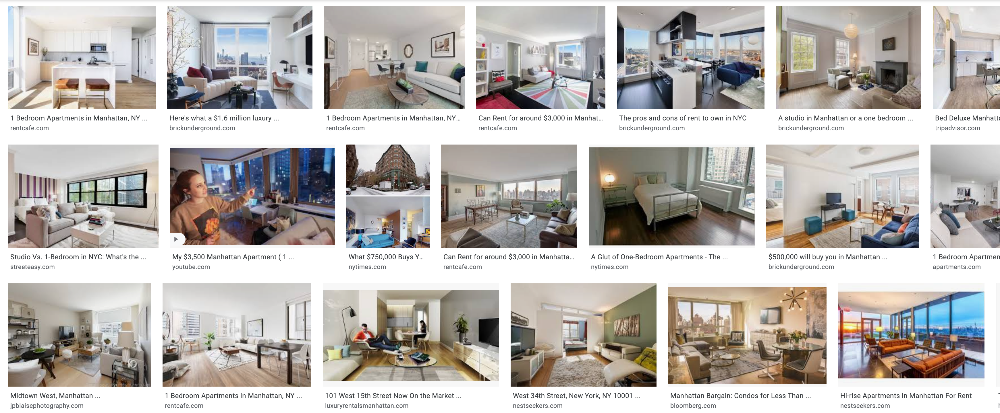
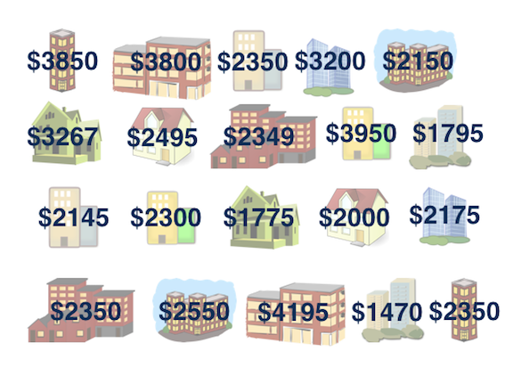
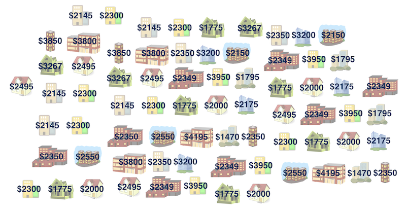
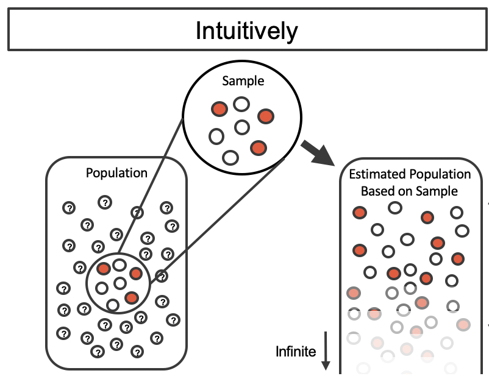
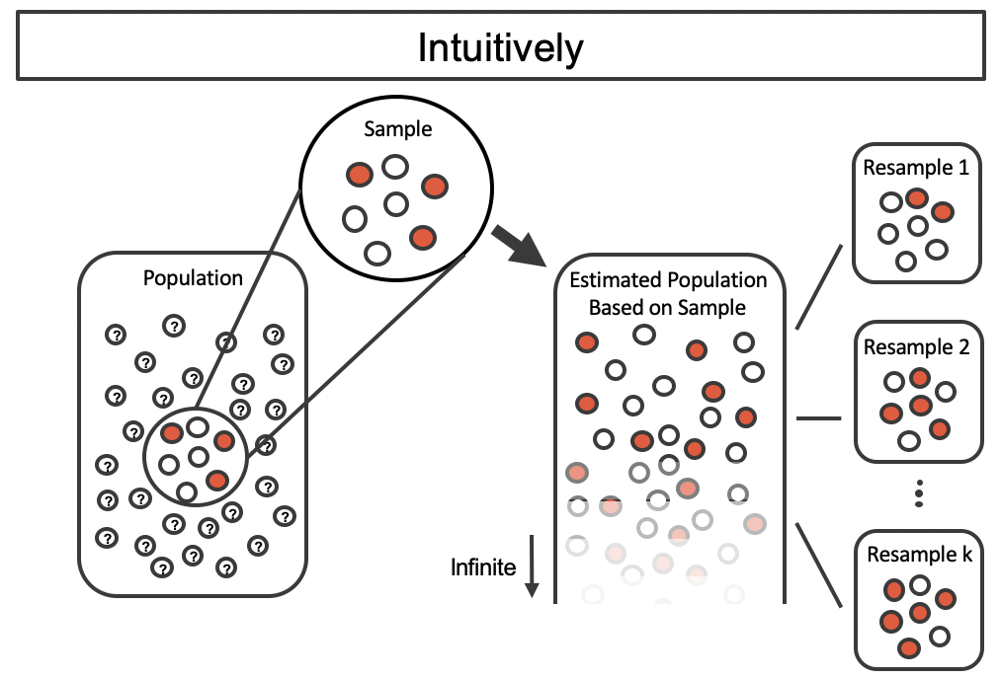
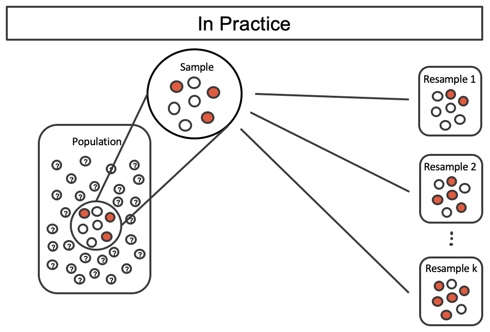

Simulation-based Inference 💻
MATH 4780/MSSC 5780 Regression Analysis
Bootstrapping
Idea of Bootstrapping
Bootstrap Confidence Interval
Bootstrap Confidence Interval for Linear Regression
- When CLT can no longer use applied, bootstraping is a way to quantify uncertainty.
- It doesn’t mean that we cannot use bootstraping when CLT is applicable. OK.
- You can probably do bootstraping using your sample under any situation.
- In other words, the method can be widely used in many situations, and in fact it is very popular in statistics and machine learning.
- Ok let’s see what it is.
Why Simulation-based Inference?
- Let’s go back to MATH 4720. How do we do interval estimation for population mean \(\mu\)?
. . .
- \(z\)-interval when \(\sigma\) is known
- Student’s \(t\)-interval when \(\sigma\) is unknown
What are the assumptions in order to use \(z\) or \(t\) intervals?
. . .
The population is Gaussian. If not, the sample size is large enough so that the central limit theorem can be applied!
. . .
We never answer this question in MATH 4720. What if the population is not Gaussian and the sample size \(n\) is small, i.e., CLT becomes powerless?
Bootstrapping 👢
- The term bootstrapping comes from the phrase
pulling oneself up by one’s bootstraps
which is a metaphor for accomplishing an impossible task without any outside help.
- Impossible task: estimating population parameter with uncertainty using data from only the given single sample dataset, without CI formula and replicates of data generated from the assumed probability model.
- Note: Notion of saying something about a population parameter using only information from an observed sample is the crux of statistical inference, it is not limited to bootstrapping.
- The term bootstrapping comes from the phrase “pulling oneself up by one’s bootstraps”, which is a metaphor for accomplishing an impossible task without any outside help.
- In statistics scenario, it means that we are estimating a population parameter using data from only the given single sample dataset, without CI formula and/or replicates of data.
- I call it Impossible task, but that’s basically what statistics usually does.
- So notion of saying something about a population parameter using only information from an observed sample is the crux of statistical inference, it is not limited to bootstrapping.
Rent in Manhattan
How much do you think it costs to rent a typical 1 bedroom apartment in Manhattan?

- Here is our example. How much do you think it costs to rent a typical 1 bedroom apartment in Manhattan NYC?
- Well if you have no idea, at least we can say we are 100% confident that the average one-bedroom rent in Manhattan is between 0 to one million dollars.
- it’s not helping though.
Data
- Consider 20 one-bedroom apartments that were randomly selected on Craigslist Manhattan from apartments listed as “by owner”.
[1] 1470 4195t(manhattan) [,1] [,2] [,3] [,4] [,5] [,6] [,7] [,8] [,9] [,10] [,11] [,12] [,13] [,14]
rent 3850 3800 2350 3200 2150 3267 2495 2349 3950 1795 2145 2300 1775 2000
[,15] [,16] [,17] [,18] [,19] [,20]
rent 2175 2350 2550 4195 1470 2350- The minimum is 1470 and the rent can be as high as near $4200.
Parameter of Interest
- Could focus on the median rent or mean rent depending on our research goal.

- We could focus on the median rent or mean rent depending on our research goal. Sometimes we are interested in other quantiles, not just median.
Observed Sample vs. Bootstrap Population
IDEA: We assume the sample is representative of the population, so create an artificial population by replicating the subjects from the observed ones.

Sample median = $2350

Population median = ❓
- So based on the sample, the sample median rent is $2350.
- The question is What’s our BT population look like that we can sample from?
- Well the idea is that we assume that there are probably more apartments like the ones in our observed sample in the population as well.
- So here, basically the BT artificial population is made from our sample data, and the population is like so many replicates of our given sample.
- Again, this is an artificial population, not the real population. If I had the real population, no inference or estimation is needed. We know the truth. Right.
Bootstrap Population

Bootstrap Sampling

Practical Bootstrap Sampling

Taking repeated resamples from the sample data is the same process as creating an infinitely large estimate of the population. It is computationally more feasible to take resamples directly from the sample. Note that the resampling is now done with replacement (that is, the original sample does not ever change) so that the original sample and estimated hypothetical population are equivalent.
Bootstrapping Algorithm
-
[1] Take a bootstrap sample
- a random sample taken with replacement from the original sample, of the same size as the original sample.
-
[2] Calculate the bootstrap statistic
- a statistic such as mean, median, proportion, slope, etc. computed on the bootstrap samples.
-
[3] Repeat steps (1) and (2) many times to create a bootstrap distribution
- a distribution of bootstrap statistics.
-
[4] Calculate the bounds of the \((1-\alpha)100\%\) confidence interval
- the middle \((1-\alpha)100\%\) of the bootstrap distribution.
- So the BT scheme or algorithm is like this.
- [1] Take a bootstrap sample - a random sample taken with replacement from the original sample, of the same size as the original sample. In this case it’ll be 20.
- [2] Calculate the bootstrap statistic - a statistic such as mean, median, proportion, slope, etc. computed on the bootstrap samples. Here we compute the median.
- [3] Repeat steps (1) and (2) many times to create a bootstrap distribution - a distribution of bootstrap statistics.
- Finally we can make a histogram of those BT statistics, and [4] Calculate the bounds of the \((1-\alpha)100\%\) confidence interval as the middle \((1-\alpha)100\%\) of the bootstrap distribution.

Generate Bootstrap Samples of Medians from infer 📦
-
specify()the variable of interest.
manhattan |>
# specify the variable of interest
specify(response = rent) #<<- All right, let’s do it step by step.
- First we specify our response variable using specify(response = rent)
Generate Bootstrap Samples of Medians
-
specify()the variable of interest. -
generate()a fixed number of bootstrap samples.
manhattan |>
# specify the variable of interest
specify(response = rent) |>
# generate 15000 bootstrap samples
generate(reps = 15000, type = "bootstrap") #<<- And then we generate our BT samples using generate() function, reps 15000 times, and specify type = “bootstrap”.
Generate Bootstrap Samples of Medians
-
specify()the variable of interest. -
generate()a fixed number of bootstrap samples. -
calculate()the bootstrapped statistic(s).
manhattan |>
# specify the variable of interest
specify(response = rent) |>
# generate 15000 bootstrap samples
generate(reps = 15000, type = "bootstrap") |>
# calculate the median of each bootstrap sample
calculate(stat = "median") #<<- Once we collect or BT samples, we calculate the bootstrapped statistic(s) which is median using calculate() function.
- The stat argument is “median”
Generate Bootstrap Samples of Medians using infer 📦
-
specify()the variable of interest. -
generate()a fixed number of bootstrap samples. -
calculate()the bootstrapped statistic(s). - save bootstrapping distribution for analysis.
library(tidymodels)
# save resulting bootstrap distribution
boot_sample <- manhattan |>
# specify the variable of interest
specify(response = rent) |>
# generate 15000 bootstrap samples
generate(reps = 15000, type = "bootstrap") |>
# calculate the median of each bootstrap sample
calculate(stat = "median")- Then we are done! We have the BT samples or distribution of median rent for analysis.
- I just save it to the object called boot_sample.
The bootstrap Sample
👤 How many observations are there in boot_sample? What does each observation represent?
dplyr::glimpse(boot_sample)Rows: 15,000
Columns: 2
$ replicate <int> 1, 2, 3, 4, 5, 6, 7, 8, 9, 10, 11, 12, 13, 14, 15, 16, 17, 1…
$ stat <dbl> 2350, 2522, 2325, 2349, 2262, 2324, 2350, 2350, 2350, 2349, …- Each replicate median rent is calculated from a bootstrapped sample of size 20 from our original sample data.
- So now you can see that we have 15000 median rents
- Each replicate median rent is calculated from a bootstrapped sample of size 20 from our original sample data.
Visualize the Bootstrap Distribution
Code
bt_dist <- ggplot(data = boot_sample, mapping = aes(x = stat)) +
geom_histogram(binwidth = 50) +
labs(title = "Bootstrap distribution of medians")
bt_dist
- And this is the bootstrap distribution of medians that is generated purely by our sample data, and it is generated without using normal assumptions or CLT.
Calculate the CI
bt_ci <- infer::get_ci(
boot_sample, level = .95)
bt_ci# A tibble: 1 × 2
lower_ci upper_ci
<dbl> <dbl>
1 2162. 2875Code
bt_dist + geom_vline(xintercept = c(bt_ci$lower_ci, bt_ci$upper_ci),
color = "blue") +
labs(subtitle = "and 95% CI")
A 95% confidence interval is bounded by the middle 95% of the bootstrap distribution.
Bootstrapped CI for the Regression Slope
Quantify the Variability of the Slope
In simple linear regression, we
Bootstrap new samples \(\{x^b_j, y^b_j\}_{j=1}^n\) from the original sample \(\{x_i, y_i\}_{i=1}^n\).
Fit models to each of the bootstrapped samples and estimate the slope.
Use the distribution of the bootstrapped slopes to construct a confidence interval.
Bootstrap Sample 1


Bootstrap Sample 2


Bootstrap Sample 3


Bootstrap Sample 4


Bootstrap Sample 5


. . .
so on and so forth…
Bootstrap Samples 1 - 5


Bootstrap Samples 1 - 100


Slopes of bootstrap samples


Slopes of Bootstrap Samples and Bootstrapped CI


- A 95% confidence interval is bounded by the middle 95% of the bootstrap distribution.
Fit Regression to Bootstrap Samples using infer 📦
set.seed(2026)
boot_fits <- delivery_data |>
specify(time ~ cases) |>
generate(reps = 100, type = "bootstrap") |>
fit()
boot_fits# A tibble: 200 × 3
# Groups: replicate [100]
replicate term estimate
<int> <chr> <dbl>
1 1 intercept 5.83
2 1 cases 1.77
3 2 intercept 2.31
4 2 cases 2.51
5 3 intercept 0.794
6 3 cases 2.51
7 4 intercept 5.98
8 4 cases 1.55
9 5 intercept 1.73
10 5 cases 2.27
11 6 intercept 2.72
12 6 cases 2.24
13 7 intercept 6.15
14 7 cases 1.82
15 8 intercept 6.26
16 8 cases 1.83
17 9 intercept 5.63
18 9 cases 1.91
19 10 intercept 5.73
20 10 cases 1.81
# ℹ 180 more rowsBootstrap CI Methods
- Percentile method: Compute the 95% CI as the middle 95% of the bootstrap distribution:
observed_fit <- delivery_data |>
specify(time ~ cases) |>
fit()
boot_fits |> get_ci(point_estimate = observed_fit, type = "percentile")# A tibble: 2 × 3
term lower_ci upper_ci
<chr> <dbl> <dbl>
1 cases 1.64 2.54
2 intercept 0.703 7.05. . .
- Standard error method: Compute the 95% CI as the point estimate \(\pm\) ~2 standard deviations of the bootstrap distribution:
boot_fits |> get_ci(point_estimate = observed_fit, type = "se")# A tibble: 2 × 3
term lower_ci upper_ci
<chr> <dbl> <dbl>
1 cases 1.65 2.70
2 intercept -0.339 6.98confint(lm(time~cases, data = delivery_data))
car::Boot()
-
car::Boot()is a simple interface to theboot::boot().
Histogram of Bootstrap Samples
- BC\(_a\) is the accelerated bias-corrected percentile interval.
hist(car_boot)
car::Confint()
Standard errors computed by vcov(car_boot) Estimate 2.5 % 97.5 %
(Intercept) 3.32 -0.668 7.31
cases 2.18 1.606 2.75check boot::boot.ci